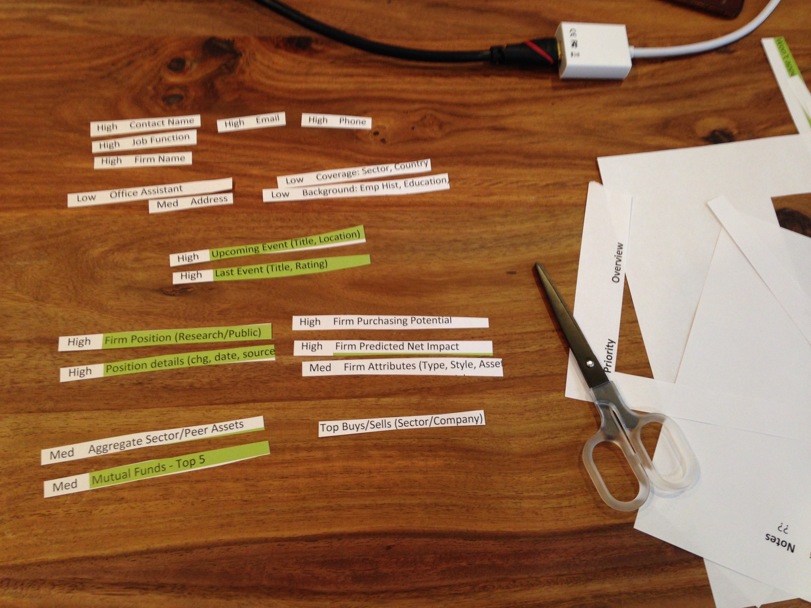
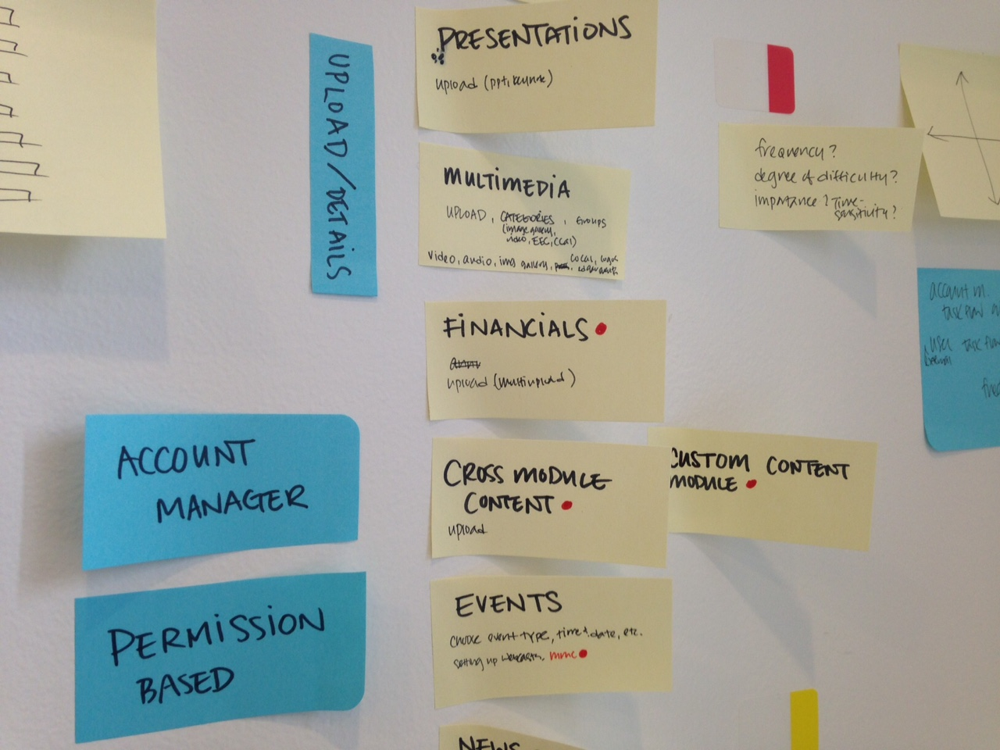
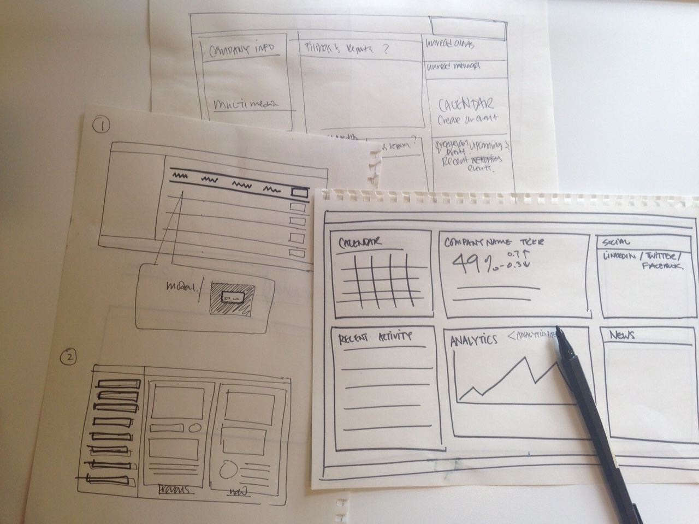

IR Insight Mobile
Interaction Design | Design Strategy | User Research
Nasdaq IR Desktop is a ground-breaking platform built exclusively for the Investor Relations community. It monitors all components in a one intuitive, and customizable platform, access to premium content and news, gain unique insight into buy-side decision-making, leverage time-saving tools to monitor developments, prioritize outreach, and measure its impact, plan investor meetings, and analyze your peers.
Discovery
The Initial ChallengeIR Insight mobile is the mobile and tablet versions of the desktop product. Working with another product designer, we collaborated closely with the desktop team to provide an enhanced view on mobile phones and tablets. In this 12-month project, we worked with a product manager to evaluate all data and metadata and filter out valuable information for our personas who are investor relations officers and administrators.
 Define
With a lot of wordsmithing and filtering, we focus on the content layout to optimize metadata. We work closely with the desktop team, and designs and content changes frequently, and we try to emulate the latest designs as much as possible. It was very important for both the mobile and desktop versions to be nearly exact as if the two products were built by one designer instead of two design teams.
Further Research
Get the feedback Along with mobile work, I paired up with the lead product researcher for product research. This heavily involves reaching out to internal teams and clients for interviews, taking notes in sessions, post-sessions debriefing, and writing up usability reports. Other tasks include sending e-mails, scheduling interviews, reviewing through transcripts, and designing quarterly infographics.